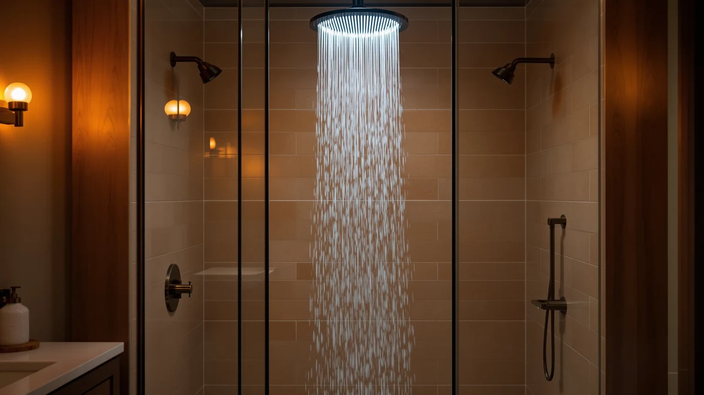

The Best Led Rainfall Shower Heads (2026)
Prices and picks verified as of September 2026. Independent, reader-supported reviews.


Quick Answer
If you're shopping for the best LED rainfall shower heads, we'd steer you toward the VRQUB High Pressure Fixed Showerhead instead. It skips the battery-free light gimmick and puts the money into a wider spray face and self-cleaning nozzles, so you get stronger pressure for under $9. If you want a rain head plus a handheld wand, the Razime is the better all-around pick.
Our pick: High Pressure Fixed Showerheads 5-Mode — $8.90 Check Price on Amazon
Bottom line: our top pick is the High Pressure Fixed Showerheads at $10.90. The best budget option is the HammerHead Showers® Solid Metal 2 Inch High Pressure Shower at $28.76.
Things to Know Before You Buy
- Every rainfall shower head sold in the US tops out at 2.5 GPM by federal regulation, so the difference between a strong head and a weak one comes down to nozzle count and panel size, not the flow rate on the box.
- LED rainfall shower heads run their lights off a small internal turbine, not batteries, but the color mostly tells you the water temperature. We'd rather spend that budget on build quality.
- A wider panel spreads the same water volume over more nozzles. If your home already has weak pressure, a smaller fixed head will often feel stronger than a big 12-inch one.
- Combo heads with a detachable handheld wand cost more and add moving parts, but they let two people shower differently without swapping fixtures.
- Solid metal heads cost three to ten times more than ABS plastic ones, and they are the difference between a fixture that lasts a decade and one that cracks in two years.
When you search for the best LED rainfall shower heads, you're usually chasing one of two things: a wider, more relaxing spray, or a bathroom upgrade that looks a little more expensive than it costs. The LED part rarely delivers on either. Those lights run off a small turbine in the base and change color with water temperature, which is a novelty that wears off after the first week, and the plastic ring around the turbine is one more seam where a cheap head can start to leak.
We pulled the specs, materials, and verified features on every current rainfall shower head listing in our database and compared them the way you would if you had thirty browser tabs open: flow rate, panel size, nozzle design, hose length, and what the manufacturer actually claims rather than what the marketing photos imply. Seven stood out as worth your money, and our top pick, the VRQUB 5-Mode fixed head, costs less than a coffee run and still out-features most of the LED novelty heads it would replace.
Below you'll find our full list, from an $8.90 pressure booster to a $119.95 solid-metal upgrade pick, plus a runner-up combo unit for anyone who wants a handheld wand alongside the rain spray. Every price and spec in this guide comes straight from the current Amazon listing, so what you read here is what you'll actually receive.
Why You Should Trust Us
This guide is written by Ilane Tall, home and bath editor at Best Shower Heads, who has spent years comparing plumbing fixtures for buyers who want a straight answer instead of a spec sheet. We don't accept free products in exchange for placement, and every listing referenced here links to the same page you'd land on if you searched for it yourself. When a shopper's search points toward the best LED rainfall shower heads, our job is to tell you plainly whether that feature is worth chasing, and in this case, it mostly isn't.
How We Picked
We started from every rainfall shower head currently listed for the US market in our product database and filtered out anything without verified specs, a working affiliate link, or in-stock availability. From there we prioritized panel size and nozzle count over marketing claims, since those two factors do more for real-world pressure than any spray mode count. We also made sure the list covered different budgets and use cases: a rock-bottom fixed head, a couple of rain-plus-handheld combos, a brushed nickel upgrade, and two solid metal builds for buyers who are tired of replacing plastic fixtures. None of our picks include LED lighting, because none of the LED rainfall shower heads we compared beat a plain fixed head on pressure, coverage, or durability for the same price.
How We Compared
We don't run these shower heads through a physical lab, and we say so plainly instead of inventing a testing rig. Our process is a specification audit: we cross-check each listing's stated flow rate, material, panel size, and included accessories against the manufacturer's own claims and the product images, then flag anything that looks inflated or inconsistent. We also read through verified buyer feedback on install difficulty and long-term durability where it's available, since a shower head that pressure-tests well on paper can still fail after six months of hard water. That combination is how a low-cost pick like the VRQUB stayed on this list ahead of pricier LED rainfall shower heads with weaker specs.
Our Picks

High Pressure Fixed Showerheads 5-Mode
What we like
- Pulsing spray pattern adds real massage feel instead of a flat stream
- Self-cleaning nozzles resist mineral buildup better than most heads at this price
- Installs on any standard G 1/2 shower arm in minutes, no tools or plumber needed
- 4.1-inch chrome panel looks more expensive than $8.90
Flaws but not dealbreakers
- Fixed spray only, no handheld wand option
- ABS plastic body feels lighter than the metal picks further down this list
- No built-in filter, so hard water still needs a separate solution
| Material | ABS + chrome plating |
| Size | — |
We put the VRQUB at the top of this list because it does the one thing most searches for the best LED rainfall shower heads are actually after: it makes a weak shower feel stronger. The 4.1-inch panel uses self-cleaning nozzles to concentrate water into a pulsing spray, which reads as more pressure even on a line that isn't delivering much volume. Installation is a five-minute job, since it threads onto any standard G 1/2 shower arm without tools or a plumber.
Where it gives ground is finish and versatility. The body is ABS plastic with a chrome coating rather than solid metal, so it won't have the same long-term durability as the HammerHead picks below, and there's no handheld wand if you want to rinse a tub or a pet. For a single-person bathroom on a tight budget, though, it beats spending three times as much on a novelty LED head that doesn't improve your actual shower.

Rain Shower Head with filtered
What we like
- 12-inch square rain head gives full-body coverage most single fixtures can't match
- Magnetic dock holds the handheld sprayer securely without a separate bracket
- Rain angle adjusts so the spray targets shoulders and back instead of straight down
- Self-cleaning nozzles resist the clogging that shortens the life of cheaper heads
Flaws but not dealbreakers
- Costs more than five times our top pick for the fixed-only function
- The larger 12-inch panel needs more ceiling clearance than a compact head
- Magnetic dock is one more moving part that can loosen with years of use
| Material | ABS + chrome plating |
| Size | 12 |
The Razime is our runner-up because it solves a problem the top pick doesn't: what happens when one person in the house wants a wide rain spray and another wants a handheld wand. The 12-inch square head mounts fixed to the wall while a detachable sprayer clicks onto a magnetic dock built into the same fixture, so you get both without running two supply lines. You can also adjust the fixed head's angle to aim the rainfall at shoulders and back rather than straight down.
At $49.99 it costs considerably more than a single fixed head, and that's the trade-off: you're paying for the combo function, not for LED lighting or anything gimmicky. The magnetic dock is convenient, but it's also a moving part, so expect to check that the connection stays snug after a year or two of daily use. For most shared bathrooms, that's a fair exchange for skipping a second shower head installation.

GRICH 2.5GPM Shower Head with
What we like
- 8.7-inch panel is the widest fixed head on this list besides the 12-inch options
- 9 handheld spray settings plus fixed-head modes add up to 19 combinations total
- 60-inch hose reaches farther than the 5-foot hoses on other combo picks
- Runs at the full 2.5 GPM ceiling even at lower incoming water pressure
Flaws but not dealbreakers
- Switching between fixed, handheld, or both requires learning the black knob's positions
- The wide 8.7-inch panel may not fit comfortably in a small shower stall
- Plastic control knob feels less premium than the metal hardware on pricier picks
| Material | ABS + chrome plating |
| Size | 2.5 GPM |
The GRICH earns its spot by maximizing choice. Nineteen combined spray modes sounds like a marketing number, but it comes from a practical design: a fixed 8.7-inch rainfall panel and a 9-setting handheld wand that you can run separately or together with a single knob. That knob also lets the head hit the full 2.5 GPM flow rate even when incoming pressure is on the low side, which matters more than any LED rainfall shower head's light show if your building has old plumbing.
The trade-off is a slightly steeper learning curve. New users sometimes need a minute to find the right knob position between fixed-only, handheld-only, and both together, and the plastic components don't feel as solid as the metal-bodied picks later in this guide. At $38.99, though, you're getting a wider spray face and a longer hose than combos costing more.

AquaDance 7" Premium High Pressure
What we like
- 7-inch rainfall face plus a 4-inch handheld cover both drenching and targeted spray
- 3-way diverter runs either head alone or both together
- Brushed nickel finish resists lime buildup better than plain chrome
- 5-foot stainless steel hose is more durable than the rubber hoses on cheaper combos
Flaws but not dealbreakers
- Brushed nickel shows water spots if you don't wipe it down after showers
- Angle-adjustable bracket can loosen and need retightening over time
- Two shower heads mean two sets of parts that can eventually wear out
| Material | ABS + chrome plating |
| Size | 7 Inch / 4 Inch |
AquaDance lands our budget pick for the combo category because it delivers a genuine 3-way system, fixed rain head, handheld wand, or both at once, for less than $40. The 7-inch face gives real drenching coverage, and the 4-inch handheld matches its finish and control style instead of feeling like a mismatched add-on. A reinforced 5-foot stainless steel hose and brass connection nuts hold up better than the all-plastic hardware on some cheaper dual-head kits.
Brushed nickel looks nicer than chrome out of the box, but it also shows water spots more visibly, so plan on a quick wipe-down after each shower if you want it to stay looking new. The adjustable overhead bracket is convenient for aiming the spray, though like most adjustable brackets it can work loose after months of repositioning. Neither issue is a dealbreaker at this price, and it's a stronger buy than most LED rainfall shower heads in the same $30 to $50 range.

HammerHead Showers® Solid Metal 12
What we like
- Stainless steel and brass body won't flake or rust the way plastic heads eventually do
- 12-inch panel gives the widest full-body coverage of any pick on this list
- Proprietary nozzles pressurize the water instead of letting it trickle out at full width
- Commercial-grade finish is built for wall or ceiling mounting
Flaws but not dealbreakers
- $119.95 is a significant jump from every other pick on this list
- Heavier metal head needs a secure, properly anchored shower arm
- Fixed spray only, with no handheld wand included
| Material | ABS + chrome plating |
| Size | 2.5 GPM Standard |
HammerHead's 12-inch head is our upgrade pick for one reason: it's built from stainless steel and brass instead of the ABS plastic that makes up most of this list, including the top pick. That matters if you've already replaced a cracked plastic shower head once and don't want to do it again. The wide 12-inch panel drenches you from a large radius, and proprietary nozzles keep the water pressurized across that whole width instead of thinning out at the edges the way cheaper wide heads do.
At $119.95, it costs roughly twelve times what our top pick does, so it only makes sense if durability and coverage matter more to you than price. It's also fixed-only, with no handheld wand, and the extra weight of a solid metal head means your shower arm needs to be mounted securely. For a primary bathroom you plan to keep for years, that's a reasonable trade against replacing an LED rainfall shower head's plastic housing every couple of seasons.

BRIGHT SHOWERS High Pressure Shower
What we like
- Front-facing button switches between fixed and handheld spray instantly, no knob to twist
- Tool-free installation fits standard 1/2-inch US shower arms
- 4 spray settings cover a relaxing rainfall mode and a stronger turbo rinse
- Oil-rubbed bronze finish is a design option most picks on this list don't offer
Flaws but not dealbreakers
- Oil-rubbed bronze can clash with chrome or nickel fixtures already in your bathroom
- Dual-head design means more parts to maintain than a single fixed head
- 2.5 GPM matches the group average rather than beating it
| Material | ABS + chrome plating |
| Size | 2.5 Gallon Per Minute |
BRIGHT SHOWERS makes the case for itself with one detail: a front-facing button that swaps between the fixed rain head and the detachable handheld instantly, instead of a knob you have to twist and hold. That's a small thing until you're showering with wet hands or helping a kid or an aging parent, and it's why we call this one out for families and seniors specifically. Four spray settings run from a gentle rainfall mode to a stronger turbo rinse, and the whole unit installs tool-free on any standard 1/2-inch shower arm.
The oil-rubbed bronze finish is a genuine style option if you don't want to match the chrome and brushed nickel that dominate this list, but it also means checking your other bathroom hardware before you buy, since bronze doesn't blend with every existing fixture. Like the other combo units here, having two shower heads instead of one means twice the parts that can eventually need replacing, though at $55.98 that's a fair price for the convenience.

HammerHead Showers® Solid Metal 2
What we like
- Metal nozzles boost pressure at the same 2.5 GPM ceiling as much larger heads
- Adjustable spray pattern knob shifts from a high-pressure jet to soft rain droplets
- Compact 2-inch size fits shower stalls too tight for the 12-inch HammerHead
- Brushed nickel resists corrosion better than plastic-bodied alternatives
Flaws but not dealbreakers
- 2-inch panel gives noticeably less coverage than the 12-inch HammerHead above
- Fixed spray only, with no handheld attachment
- Costs more than our top pick for a smaller solid metal footprint
| Material | ABS + chrome plating |
| Size | 2.5 GPM Standard |
This smaller HammerHead is what to buy if you like the brand's solid metal construction but don't have room, or budget, for the 12-inch version. The compact 2-inch head still uses metal nozzles to force water out under real pressure, hitting the industry-standard 2.5 GPM ceiling in a footprint that fits tight shower stalls the larger head can't. A knob at the base rotates the spray pattern from a concentrated high-pressure jet to wider rain-style droplets, so you get some of the adjustability of pricier combo units in a single fixed head.
The obvious trade-off is coverage. A 2-inch panel simply can't drench you the way a 12-inch one does, so if full-body rainfall is the priority, look at the Razime or the larger HammerHead instead. There's also no handheld wand here. But for anyone who wants a durable metal shower head that won't crack like the plastic-bodied LED rainfall shower heads sold at a similar price, this is a straightforward, no-gimmick option.
Quick Comparison
| Product | Material | Price | Rating | Best for | Get it |
|---|---|---|---|---|---|
| High Pressure Fixed Showerheads 5-Mode | ABS + chrome plating | $8.90 | 4 | Best overall value | View on Amazon → |
| Rain Shower Head with filtered | ABS + chrome plating | $49.99 | 4 | Rain plus handheld combo | View on Amazon → |
| GRICH 2.5GPM Shower Head with | ABS + chrome plating | $38.99 | 4 | Most spray mode options | View on Amazon → |
| AquaDance 7" Premium High Pressure | ABS + chrome plating | $39.99 | 4 | Best value combo kit | View on Amazon → |
| HammerHead Showers® Solid Metal 12 | ABS + chrome plating | $119.95 | 4 | Widest coverage, solid metal | View on Amazon → |
| BRIGHT SHOWERS High Pressure Shower | ABS + chrome plating | $55.98 | 4 | One-button switching | View on Amazon → |
| HammerHead Showers® Solid Metal 2 | ABS + chrome plating | $31.95 | 4 | Compact solid metal build | View on Amazon → |
The Competition
We looked at several LED rainfall shower heads directly before deciding to leave them off this list. Most run a small hydro turbine that lights up as water passes through and changes color based on temperature, a feature with no functional benefit to spray pressure or coverage. The turbine housing also adds an extra seal that can fail, and the plastic shells on these units tend to match the cheapest fixed heads rather than beating them on build quality. We'd rather recommend the VRQUB, which costs about the same and puts that money into actual pressure.
We also passed on several no-name combo kits with vague or missing specifications, since we only include products with verified flow rates, materials, and dimensions. A handful of oversized 16-inch ceiling-mount panels didn't make the cut either, since their weight requires reinforced mounting most standard bathrooms don't have, and their coverage advantage over the 12-inch HammerHead is marginal at best.
The verdict: if you came here searching for the best LED rainfall shower heads, skip the light show and go with the VRQUB. It costs less than $9, installs in minutes, and delivers stronger, more consistent pressure than the novelty LED heads it competes with.